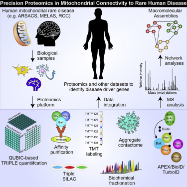
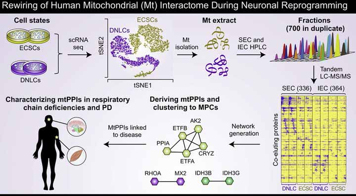
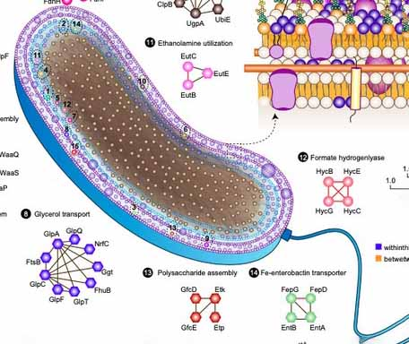
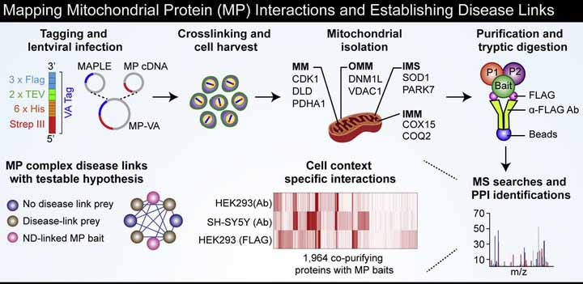
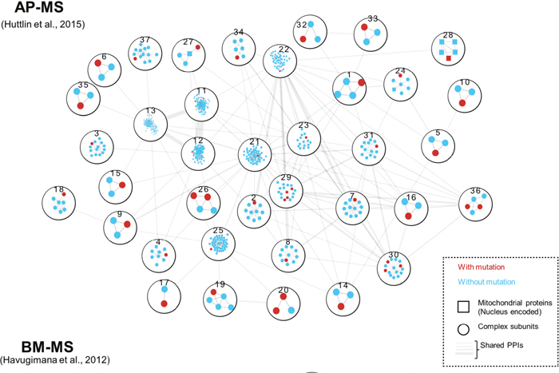
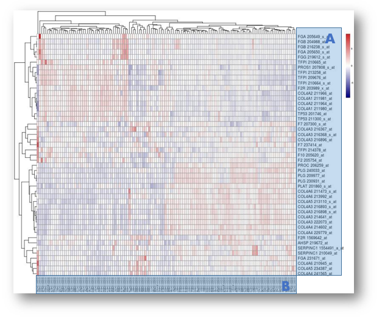

Publication
My Works

Auxotrophic and Prototrophic Conditional Genetic Networks Reveal the Rewiring of Transcription Factors in Escherichia coli
Nature Communications (2022)
Recombinant Human Collagen Hydrogel Rapidly Reduces Methylglyoxal Adducts within Cardiomyocytes and Improves Borderzone Contractility after Myocardial Infarction in Mice
Complementary Gene Regulation by NRF1 and NRF2 Protect Against Hepatic Cholesterol Overload
Cell Reports (2022)

From fuzziness to precision medicine: on the rapidly evolving proteomics with implications in mitochondrial connectivity to rare human disease

Rewiring of the Human Mitochondrial Interactome during Neuronal Reprogramming Reveals Regulators of the Respirasome and Neurogenesis
A Tag-Based Affinity Purification Mass Spectrometry Workflow for Systematic Isolation of the Human Mitochondrial Protein Complexes

Global landscape of cell envelope protein complexes in Escherichia coli

A Map of Human Mitochondrial Protein Interactions Linked to Neurodegeneration Reveals New Mechanisms of Redox Homeostasis and NF-κB Signaling

Renal oncocytoma characterized by the defective complex I of the respiratory chain boosts the synthesis of the ROS scavenger glutathione
